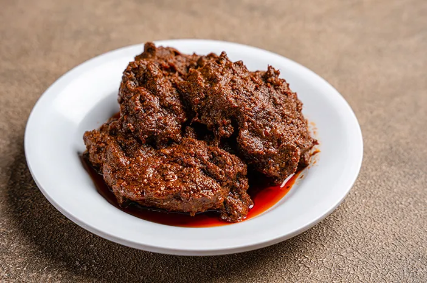

Rendang
Home

Description
Beef is a type of meat that you and your family can prepare into a variety of delicious dishes, one of which is rendang.
The savory and slightly spicy flavor of beef rendang makes this dish delicious and a favorite among many.
Although it requires quite a lot of spices and takes a long time to cook, the taste is well worth it.
Ingredients
Main
- 1 kg beef
- 1 liter of thick coconut milk from 3 coconuts (first squeeze, no water)
- 550 grams of grated coconut, toasted till brown
- 5 bay leaves
- 1 turmeric leaf
- 10 kaffir lime leaves
- 5 stalks of lemongrass
- 1/2 stick of cinnamon
- 3 cloves
- 2 teaspoon of salt
- 1 star anise
Ground Spices
- 65 grams of garlic
- 125 grams of shallots
- 15 grams of turmeric
- 35 grams of ginger
- 75 grams of galangal
- 35 grams of candlenuts
- 1/2 teaspoon of ground pepper
- 1 teaspoon of coriander
- 1 cardamom pod
- 1/4 nutmeg pod
Steps
- First, saute the ground spices and toasted grated coconut. Stir well.
- Then, add the bay leaves, lime leaves, turmeric leaves, and lemongrass. Cook until fragrant.
- Next, add the beef. Stir well.
- Pour in the coconut milk. Stir well.
- Cook the rendang over low heat until the rendang dries out.